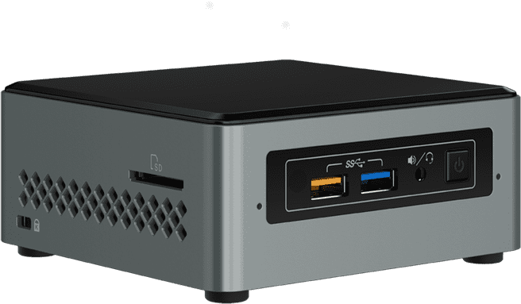
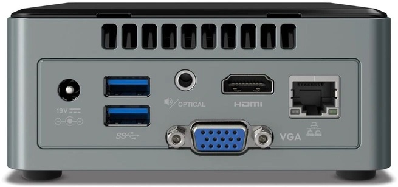
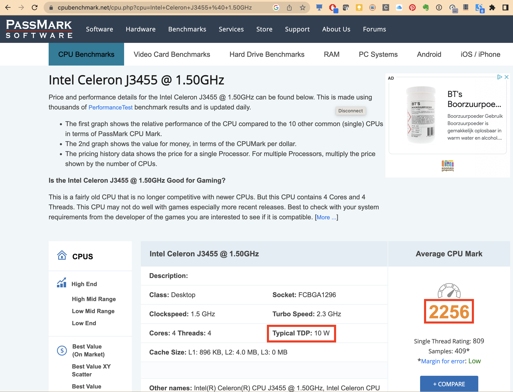

Intel NUC
What
Next Unit of Computing (NUC) is a line of small-form-factor barebone computer kits designed by Intel. ... The NUC motherboard usually measures approximately 4 × 4 inches (10 × 10 cm), although some models have had different dimensions.[3] The barebone kits consist of the board, in a plastic case with a fan, an external power supply, and a VESA mounting plate.
 
Buying Tips
- Save money by buying your NUC (or comparable barebone PC / mini PC) on 2nd hand markets (target price around 140 €)
- Older models are often sold as they are not powerfull enough as desktop computer, but they are still perfect for running many docker containers
- it doesn't matter if it is preinstalled with an old windows OS as you will install a new linux OS (ubuntu)
- 4GB RAM or more
- 60GB SSD or more
- CPU speed comparable to Intel Celeron J3455 @ 1.50GHz (passmark average CPU mark around 2000)
- Energy consumption comparable to Intel Celeron J3455 @ 1.50GHz (TDP around 10 Watt)
Checking CPU speed and energy consumption
- Identify the CPU processor type
- Enter the CPU processort type followed by passmark in the google search bar (e.g.
Intel Celeron J3455 passmark) - Open the first page (or page with
cpubenchmark.net) - The Average CPU Mark gives an indication of the CPU speed
- the Typical TDP gives an indication of the energy consumption.

DEMO showing NUCs on 2nd hand market + determining CPU speed and energy consumption
Starting from my (private) slack channel general where the devices are posted.
Nucs in my home network
I have 2 intel nucs with hostnames:
nuc1(modelNUC6CAYS)nuc2(modelNUC6CAYH)
I have also an ASUS Chromebox 2 (CN62). Although it is not an intel nuc it is very similar and configured simularly as my 2 intel NUCs and therefore I have given it hostname nuc3.
Hardware specifications model nuc2
- Model : Intel(R) Client Systems NUC6CAY
- Version : NUC6CAYH
- CPU : 4x Intel(R) Celeron(R) CPU J3455 @ 1.50GHz
- Memory : 8 GB (1600 MT/s)
- Storage : CT240BX500SSD1 - Capacity 240.0GB - 6.0Gb/s
- Audio : 7.1 digital; L+R+microphone (F); L+R+TOSLINK (R)
- Integrated Wireless : Intel® Wireless-AC 3168 + Bluetooth 4.
- Consumer Infrared Rx Sensor: Yes
- ...
Note that my nuc1 and nuc2 have very similar specs.
Initial Setup of my nuc2 (as headless device)
- download latest Ubuntu Desktop version (in my case this was
ubuntu-20.04.3-desktop-amd64.iso) - flash this image with
balenaEtcherto USB memory stick - boot nuc2 with this USB memory stick and follow the instructions to install new OS.
- rebooted
- enable ssh
- install and enable Cockpit web interface
- by default https://nuc2:9090 won't work in chrome as the site is not considered secure. To overcome this issue go to a blank section of the denial page and enter
thisisunsafe. This will add this URL to a safe list, where you should not be prompted again. (see link)
- by default https://nuc2:9090 won't work in chrome as the site is not considered secure. To overcome this issue go to a blank section of the denial page and enter
DEMO cockpit web interface
open https://nuc2:9090
Pros and cons compared to raspberry pi 3 model B
Pros
- more than 1 GB RAM (very interesting if you want to run (many) memory intensive containers)
- faster CPU
- interesting hardware (SSD disk, microphone, infrared sensor, Gigabit LAN)
- Overall quality
- benefits of the
linux/amd64architecture compared tolinux/arm/v7(orlinux/arm64) (easier to find container images forlinux/amd64architecture) - benefits of the
UbuntuOS compared toRaspberry Pi OS.
Cons
- Price
- Power consumption
- No GPIO pins